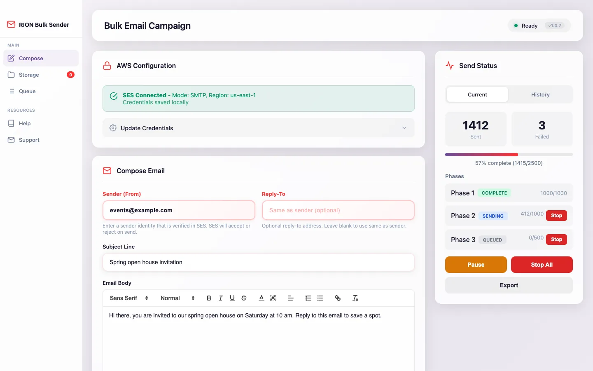

Desktop app
Bulk email app on Amazon SES
A desktop app that sends the New Door team’s bulk email through Amazon SES.
- Private repo

In numbers
- 25,000emails a month
- About $8a month to send them
- 145commits
- 1,000recipients in each phase
The problem
The New Door team sends the same email to thousands of people. Amazon SES is a low-cost way to send at that volume, but it is only an engine. It has no screen for writing a campaign, loading a list or watching a send.
The job was to put a friendly app in front of SES, so someone who is not a developer can send 25,000 emails a month for about $8.
The approach
I built a desktop app with Electron. It bundles a small local server that talks to SES, so credentials stay on the machine and nothing needs hosting. The app opens with a setup wizard that connects to SES with either SMTP credentials or AWS access keys, then shows one screen for the whole job.
- Write. A rich-text editor for the body, a sender chosen from the verified addresses, an optional reply-to, and attachments.
- Load. Drop in a CSV. The app checks every address and drops duplicates and invalid ones before anything is queued.
- Send. The list is cut into phases of 1,000 recipients. Each phase can be watched, and stopped on its own.
- Control. Pause, resume, stop one phase or stop everything. The history keeps every past send, and the results export as a CSV.
How it works
The screen is built around the one thing people want to know: how far along is the send. The compose form is on the left. On the right, Send Status shows how many have gone out, how many failed, a progress bar and each phase.


Staying inside the limits
SES allows a fixed number of messages per second. The app sends about 14 a second, with a short pause after each message, and reuses a few connections. That stays under the cap without anyone thinking about it. Phases make a long send easier to watch and to stop part-way.
Surviving a restart
The queue is saved to disk a moment after every change, so a send that is interrupted is still on record when the app opens again. The local server picks a free port starting at 3001 and shuts down with the app.
Results
| Measure | Result |
|---|---|
| Volume | About 25,000 emails a month |
| Cost | About $8 a month to send them |
| Send rate | About 14 a second |
| Batches | Phases of 1,000, each one stoppable |
| Built over | Dec 2025 to Sep 2026, 145 commits |
It was built for the New Door team. The repo is private, so there is no link, and the screenshots above use made-up data only.
What I did
- Built a desktop bulk email app that sends through Amazon SES.
- Upload a CSV, add attachments, and pause or resume a send.
- About $8 a month for 25,000 emails.
- Wrote a test plan for three changes: a sign-out fix, stop controls for a send, and a restart button in the setup wizard.
What I learned
A tool people trust has a stop button. Pause and resume were there first. Stop all and stop one phase were added later, with a confirmation before either runs.
Clean up when you quit. Signing out left the old server running on its port, and the next launch could not connect. The fix was to end that process on sign-out, and to offer a restart in the setup wizard if the server will not answer.
Write the test plan before the release. Each of those changes has a short list of steps to repeat, so the next build can be checked the same way.